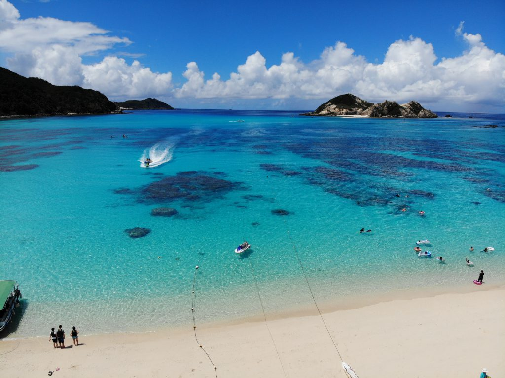
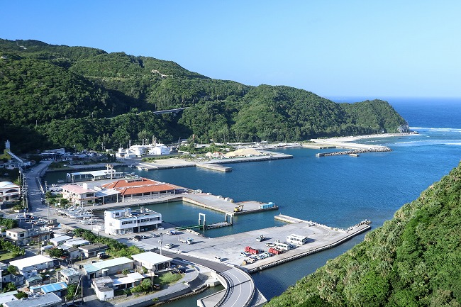

The largest Kerama island and the closest to Naha — home to Aharen Beach's dazzling blue and the quieter, turtle-loved Tokashiku Beach.慶良間で最も大きく、那覇から最も近い島。阿波連ビーチの目の覚めるブルーと、ウミガメに愛される静かな渡嘉志久ビーチ。
Tokashiki is the biggest of the Kerama Islands and the quickest to reach from Naha, which makes it a favourite for both day trips and relaxed overnight stays. The high-speed boat takes around 35–40 minutes from Tomari Port; the car ferry takes a little over an hour. Like the rest of the Keramas, it sits within Kerama Islands National Park and is ringed by the same brilliant "Kerama Blue" water. 渡嘉敷は慶良間諸島で最も大きく、那覇から最短で渡れる島。日帰りにも、ゆったり泊まりにも人気です。高速船なら泊港から約35〜40分、フェリーでも1時間強。ほかの慶良間同様、慶良間諸島国立公園に含まれ、同じ鮮やかな「ケラマブルー」に囲まれています。

Aharen Beach is the island's main beach — a long, curving bay of white sand with easy snorkeling and beach facilities in season. Tokashiku Beach, over on the other side, is quieter and well known for the green sea turtles that graze just offshore. 阿波連ビーチは島のメインビーチ。白砂の弧を描く湾で、シーズン中はシュノーケルもしやすく施設も整います。反対側の渡嘉志久ビーチはより静かで、すぐ沖で草を食むアオウミガメで知られます。
Boats leave from Tomari Port in central Naha. As with all the Kerama routes there is no alternative transport, so rough weather means cancellations — always check conditions before you travel. 船は那覇中心部の泊港発。慶良間の他の航路と同じく代替交通はなく、荒天は欠航に直結します。出発前に必ず海況の確認を。

Family-run pensions, guesthouses and minshuku, mostly around Aharen Beach, plus a beachfront hotel at Tokashiku. Always book ahead (essential in summer).家族経営のペンション・ゲストハウス・民宿が中心で、多くは阿波連ビーチ周辺に。とかしくビーチにはビーチ前のホテルも。予約は必ず事前に（夏は特に必須）。
The Kerama routes stop in rough weather and there's no other way across. We forecast cancellation risk every morning on Instagram.慶良間航路は荒天で運休し、他に渡る手段はありません。毎朝の欠航リスクをInstagramで配信しています。